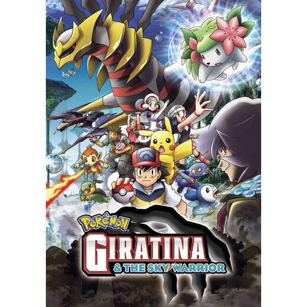

|  | |
| Name | Girantina and the Sky Warrior |
| Language | English |
| Hours | 1h 50m |
| Genre | Adventure/Anime |
| Summary | Peace is restored as Reggigigas comes back to the temple of dots for a adventurer to see. And Shaymin finnaly gets to the garden of peace and transforms into a flying Pokèmon and flies away to the destiney garden so it can heal. Also, Girantina comes back to the reverse world and looks over it, ready to attack Dialga and Palkia. And everything is back to normal. Ash keeps on going in his amazing jorney. |